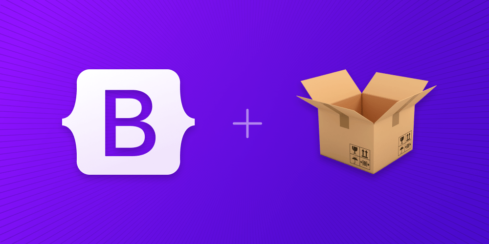

The official guide for how to include and bundle Bootstrap’s CSS and JavaScript in your project using Parcel.
We’re building a Parcel project with Bootstrap from scratch, so there are some prerequisites and upfront steps before we can really get started. This guide requires you to have Node.js installed and some familiarity with the terminal.
Now that we have all the necessary dependencies installed, we can get to work creating the project files and importing Bootstrap.
We’ve already created the my-project folder and initialized npm. Now we’ll also create our src folder, stylesheet, and JavaScript file to round out the project structure. Run the following from my-project, or manually create the folder and file structure shown below.
When you’re done, your complete project should look like this:
At this point, everything is in the right place, but Parcel needs an HTML page and npm script to start our server.
With dependencies installed and our project folder ready for us to start coding, we can now configure Parcel and run our project locally. Parcel itself requires no configuration file by design, but we do need an npm script and an HTML file to start our server.
In the next and final section to this guide, we’ll import all of Bootstrap’s CSS and JavaScript.
Download Bootstrap to get the compiled CSS and JavaScript, source code, or include it with your favorite package managers like npm, RubyGems, and more.
Download ready-to-use compiled code for Bootstrap v5.3.3 to easily drop into your project, which includes:
This doesn’t include documentation, source files, or any optional JavaScript dependencies like Popper.
Compile Bootstrap with your own asset pipeline by downloading our source Sass, JavaScript, and documentation files. This option requires some additional tooling:
Should you require our full set of build tools, they are included for developing Bootstrap and its docs, but they’re likely unsuitable for your own purposes.
If you want to download and examine our examples, you can grab the already built examples:
Skip the download with jsDelivr to deliver cached version of Bootstrap’s compiled CSS and JS to your project.
If you’re using our compiled JavaScript and prefer to include Popper separately, add Popper before our JS, via a CDN preferably.
We recommend jsDelivr and use it ourselves in our documentation. However, in some cases—like in some specific countries or environments—you may need to use other CDN providers like cdnjs or unpkg.
You’ll find the same files on these CDN providers, albeit with different URLs. With cdnjs, you can use this direct Bootstrap package link to copy and paste ready-to-use HTML snippets for each dist file from any version of Bootstrap.
Note that you should compare same length hashes, e.g. sha384 with sha384, otherwise it’s expected for them to be different. As such, you can use an online tool like SRI Hash Generator to make sure that the hashes are the same for a given file. Alternatively, assuming you have OpenSSL installed, you can achieve the same from the CLI, for example:
Pull in Bootstrap’s source files into nearly any project with some of the most popular package managers. No matter the package manager, Bootstrap will require a Sass compiler and Autoprefixer for a setup that matches our official compiled versions.
Install Bootstrap in your Node.js powered apps with the npm package:
const bootstrap = require('bootstrap') or import bootstrap from 'bootstrap' will load all of Bootstrap’s plugins onto a bootstrap object. The bootstrap module itself exports all of our plugins. You can manually load Bootstrap’s plugins individually by loading the /js/dist/*.js files under the package’s top-level directory.
Bootstrap’s package.json contains some additional metadata under the following keys:
Discover what’s included in Bootstrap, including our compiled and source code flavors.
Once downloaded, unzip the compressed folder and you’ll see something like this:
This is the most basic form of Bootstrap: compiled files for quick drop-in usage in nearly any web project. We provide compiled CSS and JS (bootstrap.*), as well as compiled and minified CSS and JS (bootstrap.min.*). Source maps (bootstrap.*.map) are available for use with certain browsers’ developer tools. Bundled JS files (bootstrap.bundle.js and minified bootstrap.bundle.min.js) include Popper.
Bootstrap includes a handful of options for including some or all of our compiled CSS.
| CSS files | Layout | Content | Components | Utilities |
|---|---|---|---|---|
| bootstrap.css | include | include | include | include |
| bootstrap.css | include | include | include | include |
| bootstrap.css | include | include | include | include |
| bootstrap.css | include | include | include | include |
| bootstrap.css | include | include | include | include |
Similarly, we have options for including some or all of our compiled JavaScript.
Learn about the browsers and devices, from modern to old, that are supported by Bootstrap, including known quirks and bugs for each.
Bootstrap supports the latest, stable releases of all major browsers and platforms.
Alternative browsers which use the latest version of WebKit, Blink, or Gecko, whether directly or via the platform’s web view API, are not explicitly supported. However, Bootstrap should (in most cases) display and function correctly in these browsers as well. More specific support information is provided below.
You can find our supported range of browsers and their versions in our .browserslistrc file:
We use Autoprefixer to handle intended browser support via CSS prefixes, which uses Browserslist to manage these browser versions. Consult their documentation for how to integrate these tools into your projects.
Generally speaking, Bootstrap supports the latest versions of each major platform’s default browsers. Note that proxy browsers (such as Opera Mini, Opera Mobile’s Turbo mode, UC Browser Mini, Amazon Silk) are not supported.
Bring Bootstrap to life with our optional JavaScript plugins. Learn about each plugin, our data and programmatic API options, and more.
Plugins can be included individually (using Bootstrap’s individual js/dist/*.js), or all at once using bootstrap.js or the minified bootstrap.min.js (don’t include both).
If you use a bundler (Webpack, Parcel, Vite…), you can use /js/dist/*.js files which are UMD ready.
While the Bootstrap CSS can be used with any framework, the Bootstrap JavaScript is not fully compatible with JavaScript frameworks like React, Vue, and Angular which assume full knowledge of the DOM. Both Bootstrap and the framework may attempt to mutate the same DOM element, resulting in bugs like dropdowns that are stuck in the “open†position.
A better alternative for those using this type of frameworks is to use a framework-specific package instead of the Bootstrap JavaScript. Here are some of the most popular options:
We provide a version of Bootstrap built as ESM (bootstrap.esm.js and bootstrap.esm.min.js) which allows you to use Bootstrap as a module in the browser, if your targeted browsers support it.
Compared to JS bundlers, using ESM in the browser requires you to use the full path and filename instead of the module name. Read more about JS modules in the browser. That’s why we use 'bootstrap.esm.min.js' instead of 'bootstrap' above. However, this is further complicated by our Popper dependency, which imports Popper into our JavaScript like so:
The official guide for how to include and bundle Bootstrap’s CSS and JavaScript in your project using Webpack.
We’re building a Webpack project with Bootstrap from scratch, so there are some prerequisites and upfront steps before we can really get started. This guide requires you to have Node.js installed and some familiarity with the terminal.
We’ve already created the my-project folder and initialized npm. Now we’ll also create our src and dist folders to round out the project structure. Run the following from my-project, or manually create the folder and file structure shown below.